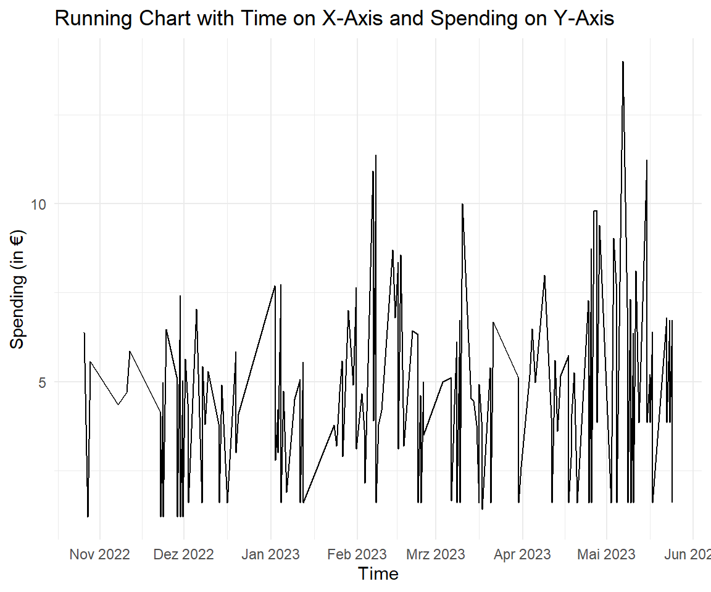

2.3 Time data
Writing a short introduction about time and time data is a challenge.
Time is considered the fourth dimension, alongside the three spatial dimensions (physics). Does time have a beginning and end (philosophy)? How does perception of time change in moments of joy compared to moments of stress (psychology)? How do our cells "keep time," and what are the molecular mechanisms that regulate biological rhythms at the cellular level (biology)?
In economics, time preference explores if people prefer the present over the future, tied to interest rates and economic cycles. Economists use time data, like GDP or stock prices, to forecast.
Time is a measure of the duration between events or the intervals during which things happen.
2.3.1 Measuring Time
Measuring time data involves assessing durations, intervals, and sequences. Common units of measurement include seconds, minutes, hours, days, and beyond. The precision of time measurement varies based on the application, ranging from macro-level timeframes in months or years to micro-level measurements in milliseconds or nanoseconds.
time stamps for point in time
The time system in which 1 hour is divided into 60 minutes, and each minute is further divided into 60 seconds, is called the sexagesimal or base-60 system. This system has been widely used in measuring time and angles (see Section 3.3).
Amazing Fact
 In everyday conversation, we often use a combination of clock time and spatial metaphors to convey specific times or durations. Expressions like "Quarter to 2" are colloquial ways of indicating time, and they are commonly understood in various cultures. In these expressions, the clock face is imagined as a circle, and the position of the clock hands is described using spatial terms.
In everyday conversation, we often use a combination of clock time and spatial metaphors to convey specific times or durations. Expressions like "Quarter to 2" are colloquial ways of indicating time, and they are commonly understood in various cultures. In these expressions, the clock face is imagined as a circle, and the position of the clock hands is described using spatial terms.
2.3.2 Measuring Dates
A calendar date is a specific day within a calendar system, typically identified by a combination of the day, month, and year.
It is a standardised way of expressing and referencing points in time. Calendar dates are used globally for various purposes, including scheduling events, recording historical events, and organising daily life.
The current date system used globally is the Gregorian calendar. The Gregorian calendar is a solar calendar introduced by Pope Gregory XIII in October 1582 to reform the earlier Julian calendar. It is the calendar system most widely used today for civil purposes.
The Gregorian calendar is based on a 365-day year divided into 12 months. It includes leap years to account for the fact that a year is not precisely 365.25 days long.
2.3.3 Your First Time (in R)
Sys.time() and Sys.Date() return the time and date on your system and they come in date formats.
The default format for dates and date-times in R is the ISO 8601 format. This format is widely used and unambiguous, representing the date in the format YYYY-MM-DD and the date-time in the format YYYY-MM-DD HH:MM:SS. It looks like a character, but is not. CET stands for Central European Time. CET is a time zone that is 1 hour ahead of Coordinated Universal Time (UTC+1).
2.3.4 Time Zones
There are 24 time zones, each representing 15 degrees of longitude (see Section 3.3). Time zones are centred around the Prime Meridian (0 degrees longitude).

Amazing Fact
 Historically, China used five time zones, corresponding to its geographical expanse. However, in 1949, after the establishment of the People's Republic of China, the government decided to unify the country under a single time zone. China's decision to use a single time zone is rooted in the desire for national unity and centralized governance. Adopting a single time zone simplifies administration and coordination across the country.
Historically, China used five time zones, corresponding to its geographical expanse. However, in 1949, after the establishment of the People's Republic of China, the government decided to unify the country under a single time zone. China's decision to use a single time zone is rooted in the desire for national unity and centralized governance. Adopting a single time zone simplifies administration and coordination across the country.
In addition to the standard time zones, some regions may observe daylight saving time (DST), which involves adjusting the clocks forward by one hour during the warmer months. This practice can result in an effective difference of two hours between neighbouring time zones during the DST period.
In summary, the relationship between CET, UTC, and DST is dynamic:
- During standard time (not observing DST), CET is UTC+1.
- During daylight saving time (DST), CET becomes CEST (Central European Summer Time) and is UTC+2.
Australia, positioned ahead of numerous countries in the global time zones, stands among the foremost nations to usher in the New Year. As the first place to celebrate the New Year is typically in the Pacific region, Australia's geographical location allows it to be among the early heralds of the new calendar year. Notably, the city of Sydney has gained international acclaim for its legendary New Year's Eve festivities. The iconic celebrations in Sydney feature a breathtaking fireworks display illuminating the night sky over the Sydney Harbour Bridge and the Sydney Opera House, creating a dazzling spectacle that marks the beginning of the New Year in grandeur.
2.3.5 Time Management in R
2.3.5.1 Decimal Time
How can we code one hour in R? Well, we can put numbers in a numeric vector. Combinations of hours, minutes and seconds can be represented by decimals, e.g. one and a half hours are 1.5 and 1 hour and 10 min corresponds to 1.166 hours.
# one hour
time <- 1
# half hours
hours <- c(1, 1.5, 2.5)
# 1 hour 10 min = 7/6 (in hours)
one_hour_10_min <- c(1.1666667)Well, fractions are a complicated way of representing minutes.
2.3.5.2 Time Formats
In R, time formats are essential for handling and representing date and time information. Two commonly used time-related classes in R are Date and POSIXct.
In Germany, it is more common to have DD-MM-YYYY, e.g. 24.12.2023. format() (or the format option in as.Date()) can change the internal representation:
German_Date <- c("24.12.2023")
# This does not work without the format option
#as.Date(German_Date)
as.Date(German_Date, format = "%d.%m.%Y")
#> [1] "2023-12-24"Note that date variables often come as character and need to be converted to a time format. In base R, there is no specific as.time() function for converting objects to time class objects. However, there are functions like as.POSIXct() and as.POSIXlt() for working with date and time information.
Well, what is the benefit of converting to a time and date format? For example date arithmetic such as calculating the difference between dates (e.g. difftime()), adding or subtracting days, months, or years, and other operations. This is more straightforward and accurate than performing such operations on raw character strings.
2.3.6 Coffee Spending
The coffee data comes from the app Money Manager. It allows to track your spendings and export data to .xlsx format. Variables and date information is German.
Coffee <- read_csv("./data/Coffee/Coffee.csv") %>%
select(Date = Datum,
Category = Kategorie,
Note = Notiz...5,
Amount = Betrag)
glimpse(Coffee)
#> Rows: 150
#> Columns: 4
#> $ Date <chr> "24/05/2023 12:40:44", "24/05/2023 12:12:20", "23/05/2023 12:…
#> $ Category <chr> "Lebensmittelkosten", "Lebensmittelkosten", "Lebensmittelkost…
#> $ Note <chr> "Kaffee", "Mensa", "Getränke", "Mensa", "Getränke", "Mensa", …
#> $ Amount <dbl> 1.60, 6.73, 3.85, 6.73, 3.85, 4.78, 6.80, 1.60, 6.40, 3.85, 5…Change the character to a date format:
Coffee$Date <- as.POSIXct(Coffee$Date, format = "%d/%m/%Y %H:%M:%S")
head(Coffee$Date)
#> [1] "2023-05-24 12:40:44 CEST" "2023-05-24 12:12:20 CEST"
#> [3] "2023-05-23 12:31:46 CEST" "2023-05-23 12:01:52 CEST"
#> [5] "2023-05-22 12:25:08 CEST" "2023-05-22 12:00:26 CEST"What is the time interval of available data:
# First and Last Date
range(Coffee$Date)
#> [1] "2022-10-26 07:03:04 CEST" "2023-05-24 12:40:44 CEST"
# Range in Days
diff(range(Coffee$Date))
#> Time difference of 210.2345 days2.3.6.1 Spending Time of Day
To calculate the usual time of spendings, calculate the average of all observed times. First, extract the time of day of spending with format() to create Coffee$time_of_day.
#> [1] "12:40:44" "12:12:20" "12:31:46" "12:01:52" "12:25:08" "12:00:26"Then, use the chron package to convert these times to the times format with times() function. Then apply mean() on the times object.
#> [1] 12:32:582.3.6.2 Run Chart
Use scale_x_datetime() to show each month on the x-axis.
ggplot(Coffee, aes(x = Date, y = Amount)) +
geom_line() +
labs(title = "Running Chart with Time on X-Axis and Spending on Y-Axis",
x = "Time",
y = "Spending (in €)") +
theme_minimal() +
scale_x_datetime(date_breaks = "1 month", date_labels = "%b %Y") 
Figure 2.4: Every purchase in the coffee app between November 2022 and June 2023, in euros. Flat stretches are days without spending.